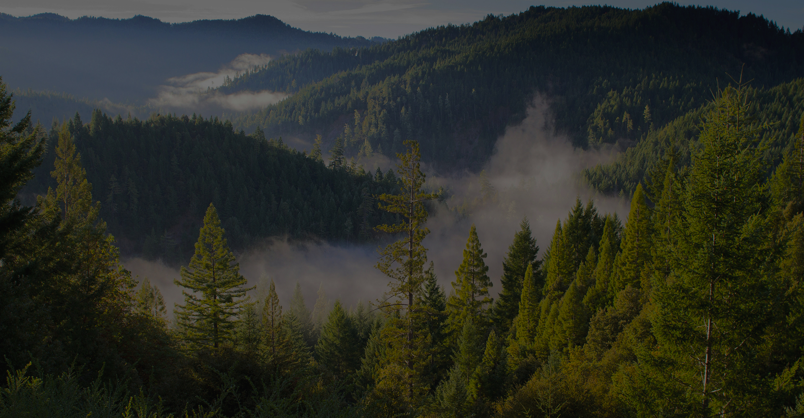
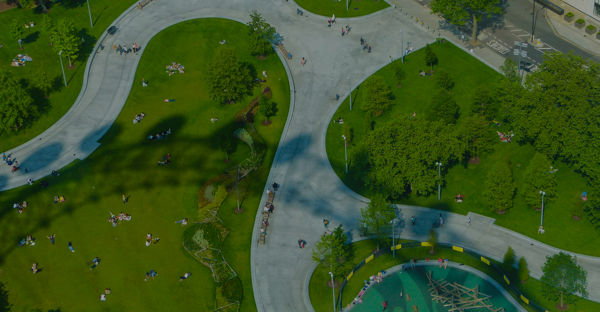
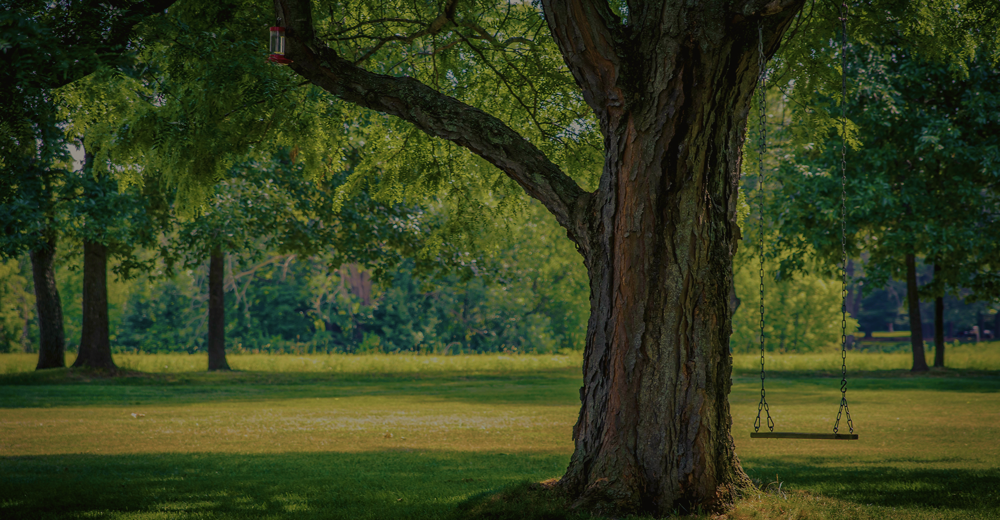
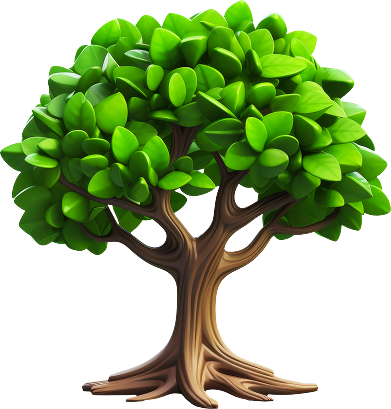
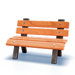
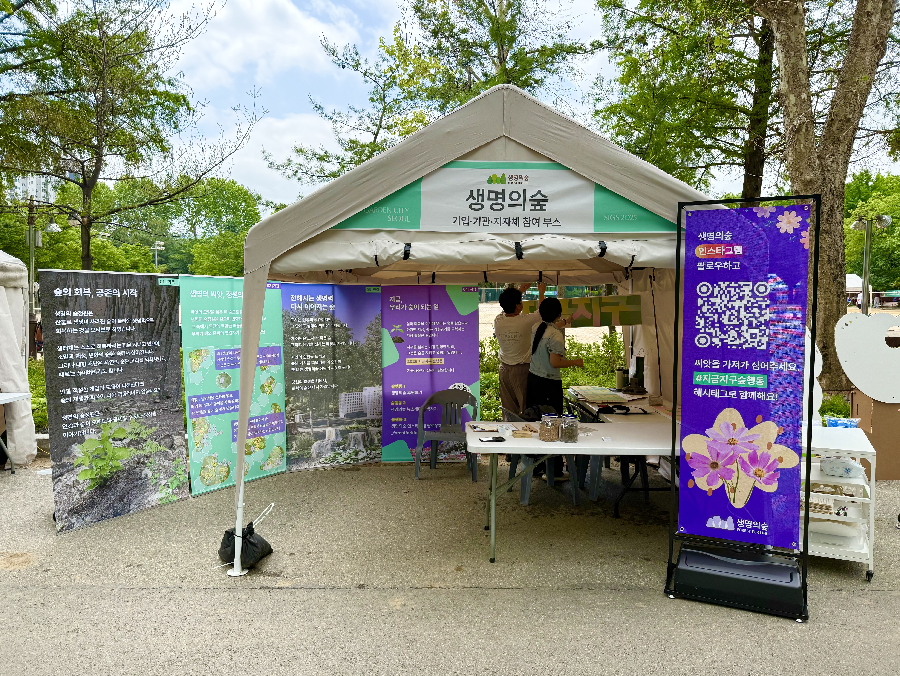
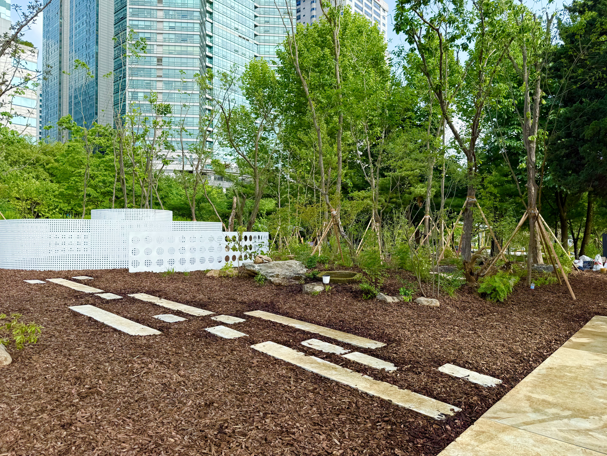
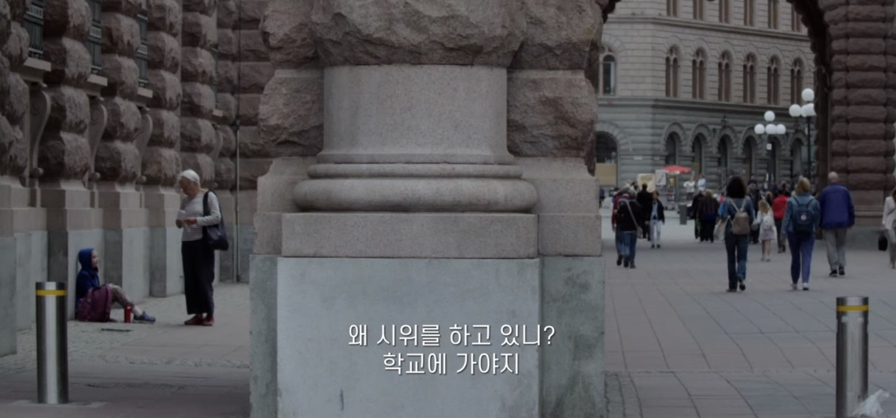
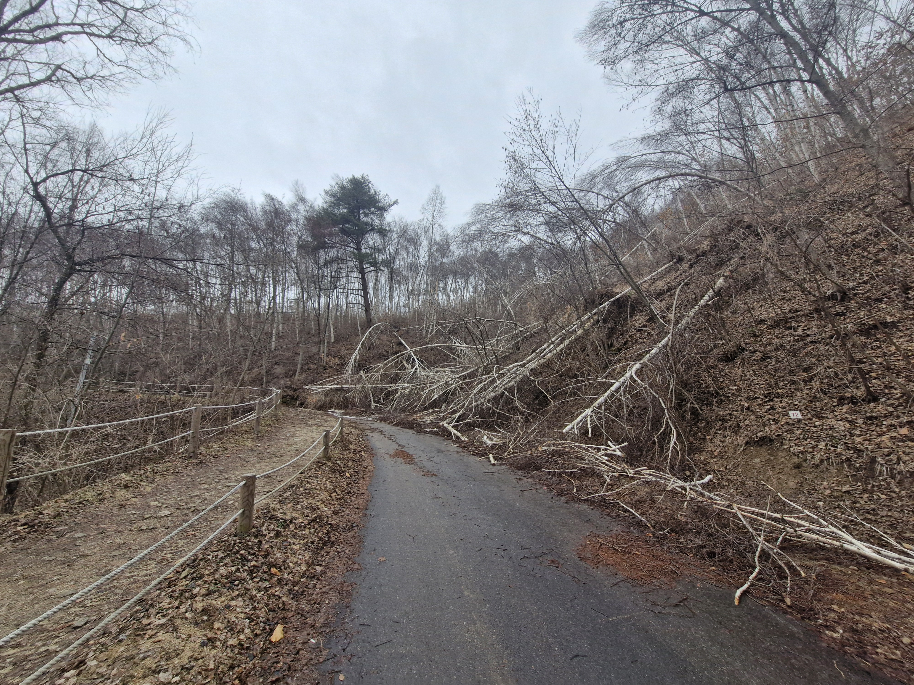
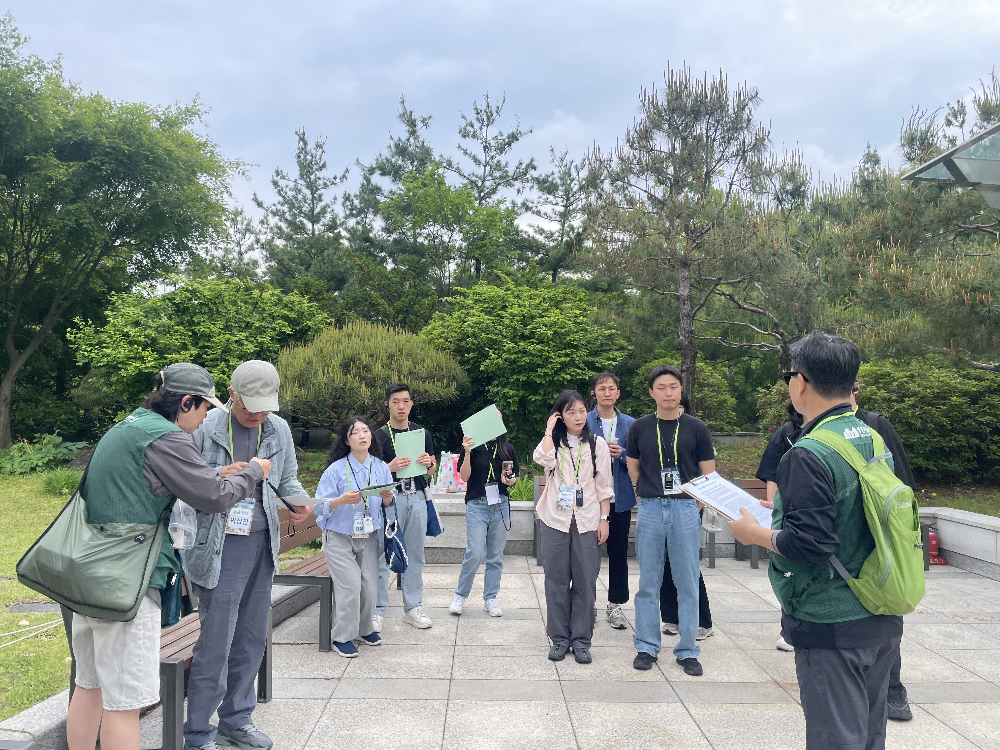

2025년 대형산불로 사라진 숲의 복원에 함께해주세요
누구나 일상에서 건강한 숲을 누리도록 도시 속 나무심기를 위한 기부

특별한 날을 기념하는 새로운 방법 서울 마이트리

우리가 지켜야 할 고목나무 이야기
2024년 한 해 동안 나무의 숲에서 전국 방방곡곡 심은 나무의 수는 총 102,302그루 입니다.


숲을 통해 건강한 도시생태계를 만들고자 합니다. 도시의 생활 환경을 개선하기 위해 시민과 함께 숲을 가꿉니다.
5월 22일 아침, 2025 서울국제정원박람회의 개막을 앞두고 박람회장은 마지막 손길로 분주했습니다. 생명의숲 부스도 올해 캠페인 슬로건인 “2025 지금지구 숲행동” 보드를 걸며 준비를 마쳤습니다.

서울 동작구 보라매공원에 2025 서울국제정원박람회를 맞이하여 각양 각색의 정원이 만들어졌습니다. 다양한 주제와 표현의 정원들을 구경하며 작품정원 구역에 이르면 가로지르는 길의 가운데에서 아홉개의 하얀 석조 계단을 만나게 됩니다.

서로배움학교는 생명의숲 활동가의 역량 강화를 위한 스터디 그룹 프로그램입니다. ‘일 기반 학습, 일을 통한 성장’을 중심에 두고, 주최자가 선정한 주제를 바탕으로 3~5인의 공감하는 활동가들이 참여하여, 모든 구성원이 배움의 주체가 되어 경계 없이 생각을 나눕니다.

매년 열리는 신혼부부 나무심기 행사, 2025년에도 생명의숲은 유한킴벌리와 함께 신혼부부 나무심기 행사를 진행하였습니다. 비 예보가 있었던 행사 당일, 하지만 날씨요정도 우리 모두의 바람을 알아차렸는 지, 맑은 날씨로 따뜻하게 맞이해주었습니다.

올해, 새로운 기획 활동으로 시민들과 함께하는 숲 탐방 프로그램을 준비했다. 서울 시내에서 시민들이 쉽게 접근할 수 있는 숲들을 검토한 끝에, 최종 목적지는 청와대로 정했다. 이유는 명확했다. 『청와대의 나무들』 저자이자 뛰어난 해설가인 박상진 교수님이 계시고, 조만간 개방된 청와대가 다시 일반에 폐쇄될 수도 있다는 소식 때문이었다.
